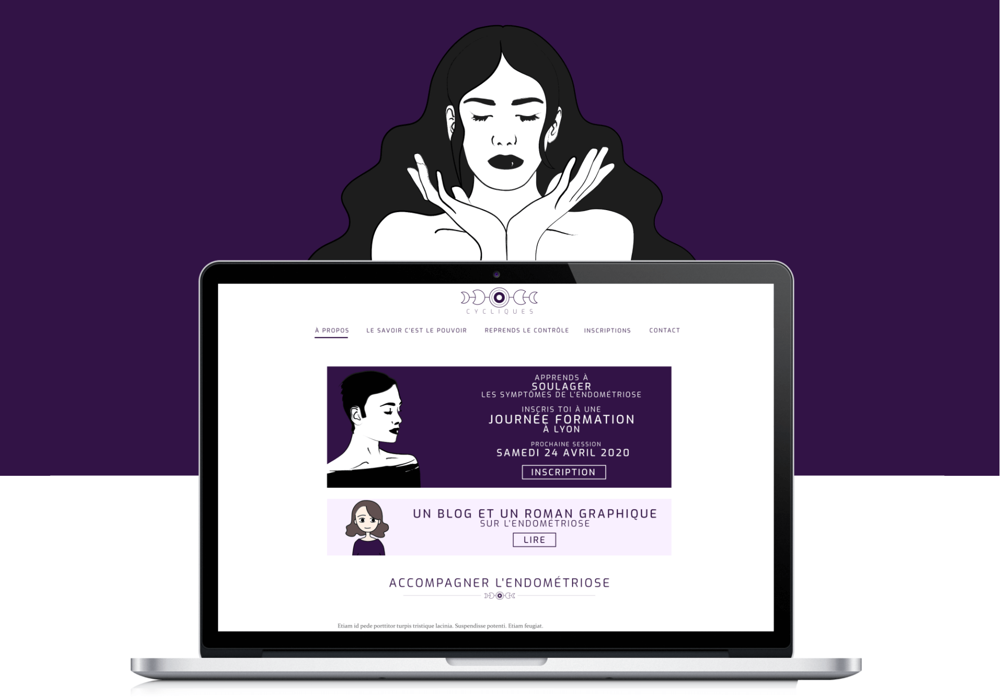
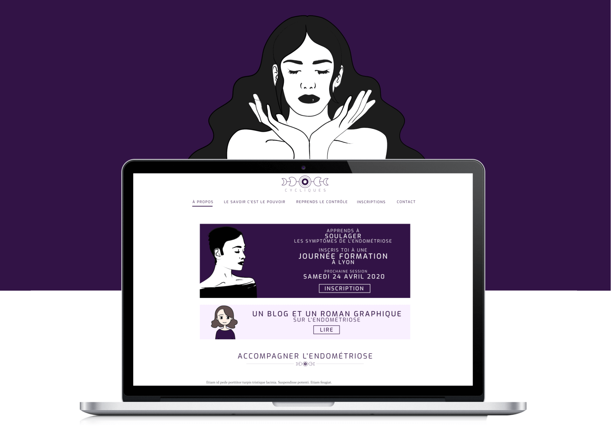
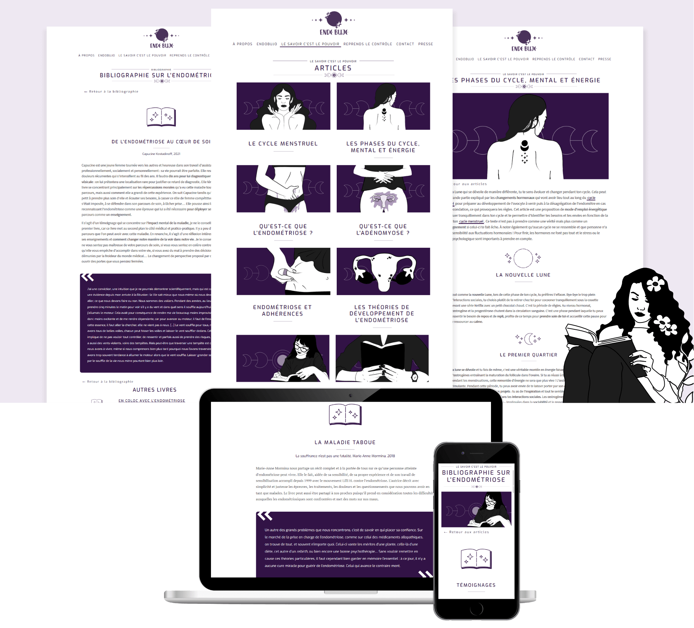

EndoBujo est une campagne Ulule pour lancer un carnet de notes permettant aux personnes atteintes d'endométriose de suivre leur maladie chronique. L'EndoBujo est le support idéal pour accompagner les femmes avec de l'endométriose.

 

Création d'un site web en support pour communiquer sur l'endométriose avec la rédaction d'une trentaine d'articles sur le cycle féminin et l'endométriose avec optimisation SEO pour faire ressortir l'EndoBujo dans des suggestions de recherches sur l'endométriose avec la mise en place de Google Analytics pour suivre le trafic et rediriger les articles sur les bons mots-clefs.
Avec le site web, nous avons créé un support de communication pour la communauté des endogirls. Ce compte nous permet de simplifier et résumer les dernières nouvelles sur l'endométriose, nos articles ou bien de créer du lien.
+800
en 6 mois.
+600
en 1 mois.
+250
en 15 jours.

Préparation d'une campagne Ulule avec des enquêtes réalisées sur des femmes atteintes d'endométriose, des professionnels de santé et dans la recherche. Faire vivre la campagne via des relances sur les réseaux sociaux, des discussions avec des actrices de l'endométriose.